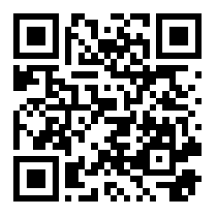
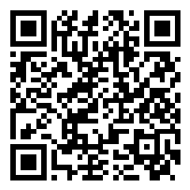
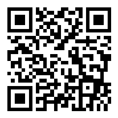
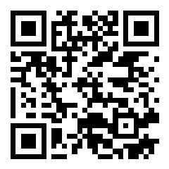
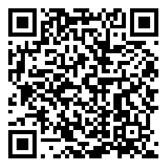

QR code demo
Hover a QR code. TrustLens decodes it locally, shows what it contains, and checks the link without opening it. Back to link demo





Hover a QR code. TrustLens decodes it locally, shows what it contains, and checks the link without opening it. Back to link demo




